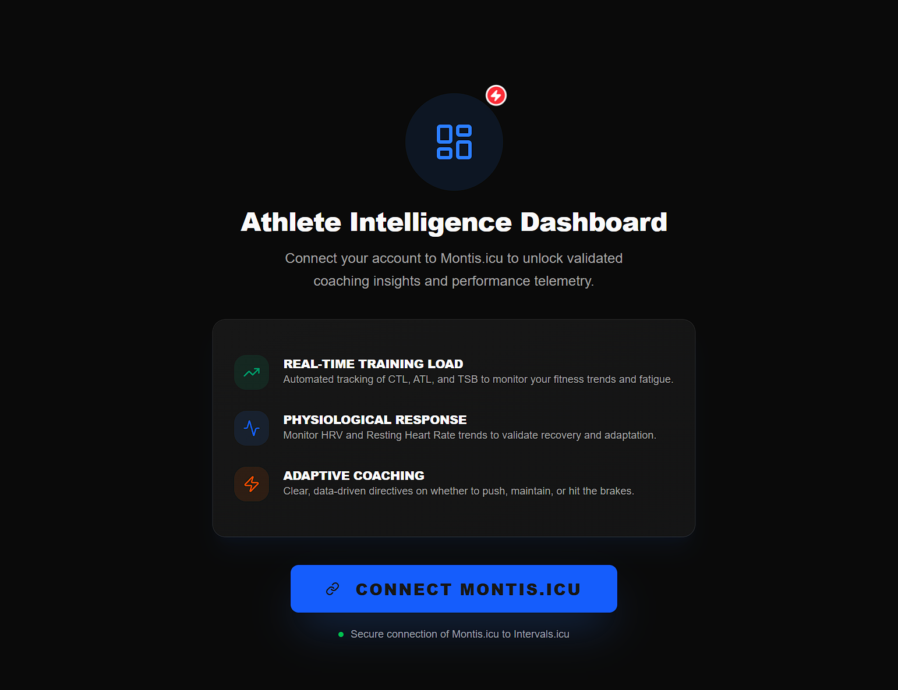
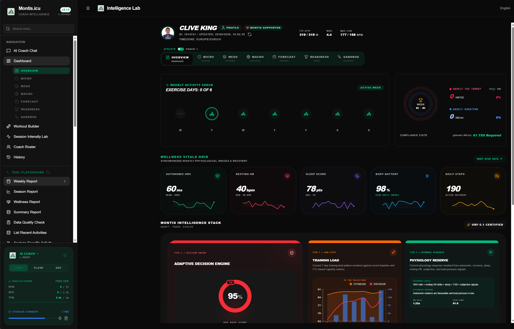

Montis.icu Coach App
Montis.icu Coach App
⚙️ Montis.icu Coach First-Time Setup
Follow these steps to connect your Intervals.icu account and use Montis through ChatGPT, Claude MCP, or the Gemini browser app. Initial connection normally takes less than one minute.
Montis uses one shared Intervals.icu connection. ChatGPT, Claude MCP, the App Hub, and the Gemini App authenticate through different client flows, but resolve back to the same connected athlete account where required.
🚀 Setup — Choose Your Interface
Choose how you want to use Montis
-
🤖 ChatGPT
Natural language guided chat experience
- ChatGPT connection issues FAQ Troubleshoot ChatGPT setup and connection problems
-
🧠 Claude + MCP
Direct MCP tool connection with natural language
- Claude connection issues FAQ Troubleshoot Claude MCP setup and connection problems
- ⚙️ Gemini App Full browser app with dashboards, reports, activity tools, calendar access, and optional managed Gemini AI natural langugae
🤖 ChatGPT Setup
Step 1 — Open the Montis.icu Coach
Open the Montis.icu Coach App inside ChatGPT (best in web browser not Mobile app first time), click on this link in a web browser Montis.icu Coach V5 and type or click "run a weekly report" and the following sign in prompt will appear, click sign in. This starts the Montis ChatGPT connection flow. ChatGPT signs in to Montis, and Montis then resolves your shared Intervals.icu connection securely. If your Intervals.icu connection is missing or expired, Montis will ask you to reconnect Intervals.icu.

Step 2 — Connect your Intervals.icu account
When prompted, click OK - to Connect Intervals.icu and approve access, do not uncheck any items. This allows the coach to read your training data securely and create new calendar events.

Step 3 — Return to ChatGPT
After authorization, you will be redirected back to ChatGPT, it will flash up a green message stating "connected" (this can take up to a minute!, if it fails it will show a red banner briefly).

Step 4 — Run your first report
Click always allow to stop this prompt on every request.It will now continue to show your report.

Use this exact structure:
FAQ — ChatGPT / Montis GPT connection issues
Use the steps below when Montis fails to connect, does not call a tool, or returns an upstream connection error inside ChatGPT.
Which ChatGPT plan and model should I use with Montis?
A ChatGPT subscription using a Thinking model is recommended for the most reliable Montis experience.
Montis can still be used with ChatGPT Free and Instant models, but results may vary significantly. Instant models have shown intermittent problems calling Montis actions correctly, including failing to call an action, returning an incomplete response, or behaving differently between chats.
This affects ChatGPT action execution, not the underlying Montis calculations. When a Montis tool is called successfully, Montis returns the same governed data and deterministic report output.
- ChatGPT subscription with a Thinking model: recommended for reliable action calling, detailed coaching reports, larger outputs, and multi-step workflows.
- ChatGPT Free: supported, but available model access, usage limits, and action reliability may affect whether a report completes successfully.
- Instant model: currently not recommended for Montis reports or action-heavy workflows because action calls can be inconsistent or fail entirely.
OpenAI support is aware of the Instant-model action reliability issue and an investigation is open. Until it is resolved, use a Thinking model for weekly, wellness, season, summary, calendar, event-analysis, and training-plan requests.
Montis says there is an upstream connection error. What should I try?
-
Start a completely new Montis GPT chat first.
Open the Montis GPT in a brand-new chat and type exactly: Typecheck connectionthenrun weekly report
This rules out stale conversation state or a failed ChatGPT tool/action binding for that specific chat. A new chat can sometimes fix the issue without refreshing the browser tab. -
If that new chat still fails, start one more new Montis GPT chat.
ChatGPT can occasionally fail to attach the tool runtime correctly to a single new chat. If the second fresh chat works, the issue was almost certainly ChatGPT chat/tool runtime state, not Montis. -
Refresh the ChatGPT browser tab.
If repeated new chats fail, refresh the browser tab and open Montis GPT again. This resets more of ChatGPT's browser-side app/runtime state than simply starting a new chat. -
Use the browser instead of the ChatGPT app.
Go tochatgpt.comin Chrome, Edge, or Safari and run the same command. This separates a ChatGPT app issue from an account/tool issue. -
Try an incognito/private window.
Log in to ChatGPT, open the Montis GPT, and run:run weekly report
This rules out cookies, cache, extensions, and stored app state. -
Try a different network.
Use mobile data or a hotspot instead of home, work, school, corporate Wi-Fi, or filtered networks. This rules out ISP, VPN, DNS, proxy, firewall, or security filtering. -
Disable VPN, proxy, iCloud Private Relay, secure DNS, or filtering tools.
Temporarily turn off VPNs, proxies, iCloud Private Relay, NextDNS, AdGuard, Web Protect, antivirus web filtering, or similar tools. OpenAI lists these as common causes of ChatGPT network, websocket, and response-generation errors. -
Use a Thinking model in a new chat.
Instant models can be unreliable when calling Montis actions. Start a new Montis GPT chat, select a Thinking model, then trycheck connectionfollowed byrun weekly report. -
Run a small Montis action first.
Try:read calendar next 7 days
If the small action works but the weekly report fails, the issue may be related to a heavier ChatGPT action run, payload handling, or timeout behaviour. -
Run check connection first.
If the shared Intervals connection is missing, ChatGPT should trigger the Montis sign-in/reconnect prompt automatically. This rules out stale OAuth/action binding. If it doesn't then:Type
check connection. A successful response means ChatGPT has a valid Montis token and Montis can resolve your shared Intervals.icu connection.
Does this mean Montis itself is down?
Not necessarily. You can check https://status.montis.icu. If the same athlete report works from Montis Gemini App https://geminiapp.montis.icu, from the command line, from browser tools, or from another ChatGPT chat/account/session, then the Montis backend is responding correctly.
In that case, the most likely causes are ChatGPT chat/tool runtime binding, stale conversation state, connector auth binding, app/browser storage, network filtering, or a temporary OpenAI-side execution issue.
What should I send to support if it still fails?
- The exact prompt used, for example:
run weekly report - Whether one new Montis GPT chat failed but another new chat worked
- Whether it fails in the ChatGPT app, browser, or both
- Whether refreshing the ChatGPT tab helps
- Whether incognito/private mode works
- Whether mobile data/hotspot works
- Whether VPN, Private Relay, secure DNS, or filtering tools are enabled
- The approximate date/time of the failed attempt
- The visible ChatGPT error message
Reference: OpenAI Help Center — Troubleshooting ChatGPT Error Messages
🧠 Claude Setup (MCP)
If you use Claude, you can connect Montis directly using Model Context Protocol (MCP).
Step 1 — Add Montis MCP Server
{
"url": "https://montis.icu/mcp",
"client_id": "intervals-mcp"
}Add this configuration in your Claude MCP / connector settings.

Step 2 — Authorize Intervals.icu
You will be prompted to connect your Intervals.icu account. Approve access to continue.

Step 3 — Use Montis Tools
Once connected, Claude can call Montis tools directly.

MCP connects Claude directly to the Montis engine — no chat wrapper.
Step 4 — Open new Claude chat
In the chat just ask for any of the tools, like a weekly report. (Different concept to a ChatGPT GPT app), tools are available in any chat.
run Weekly Report
run Wellness Report
get Activity for yesterdayFAQ — Claude AI MCP connection issues
For any issues in Claude AI:
- Go to Settings → Connections (or the integrations/tools panel depending on your client), find the Montis ICU connector, and disconnect then reconnect it. That forces a fresh OAuth token exchange and re-registers the MCP tools.
- If the issue is a stale tool list mid-conversation, starting a new conversation is the most reliable reset — tool schemas are loaded at conversation start.
- To refresh tools in connector goto settings Settings → Connections (or customise → Connections) and click three dots "..." for the connector and click refresh tools list
⚙️ Gemini App Setup
The Montis Gemini App is the complete browser-based Montis experience. It includes athlete dashboards, reports, calendar and workout tools, activity analysis, and AI coaching.
Step 1 — Open the Gemini App
In Chrome, Edge, Brave, Safari, or another modern browser, open: geminiapp.montis.icu .
Select Connect Intervals to begin.

Step 2 — Authorize Intervals.icu
Approve the Intervals.icu authorization request without removing any requested permissions.
This allows Montis to read your athlete data and, where required, create or update calendar events.
Step 3 — Open the App
After authorization, return to the Gemini App. Your athlete dashboard and non-AI tools are available without entering a Gemini API key.

Choose how Gemini AI usage is provided
The athlete dashboard and standard Montis tools do not require a Gemini API key. An AI access method is only required when using Gemini-powered coaching and report interpretation.
Option A — Montis Subscription
A Montis subscription costs $5 per month and includes:
- Gemini AI usage allowance
- Lower-latency managed Gemini API access
- Coached-athlete tools
- Subscriber support
Subscribers do not need to create or maintain a personal Google Gemini API key while using their included Montis allowance.
Subscribe for $5/monthOption B — Your own Gemini Free Tier key
You can continue using your own Google Gemini Free Tier API key. Generate one at:
No credit card is normally required for a Free Tier key. Availability and quotas are controlled by Google and may change.
Option C — Your own Gemini PAYG key
You can also use a Gemini API key connected to your own Google paid billing account. Usage and billing remain directly between you and Google.
Current Google pricing and limits: Gemini API pricing
Fallback behaviour
If your Montis subscriber allowance is exhausted, you can switch back to your own Free Tier or PAYG Gemini API key in the app.
Data usage
- Montis subscription: Gemini requests use the managed Montis allowance.
- Your own API key: Google account, billing, quota, and data-use terms apply.
⚠️ Common Setup Issues
Athlete profile missing or account not connected
This means the OAuth connection was not completed.
- Reopen the Coach link above and start with step 1. Try a different web browser or clear cache/cookies if you are having issues
- Click sign in to connect Intervals.icu
- Approve Intervals.icu authorization when prompted
- In ChatGPT, click Always allow only for Montis tool calls if you want to avoid repeated tool prompts
- Run
check connection - Run the report again
STRAVA activities are not available via the API
This means your activities exist only in Strava, and Intervals cannot access the required training metrics.
To fix this, connect a direct recording source:
- Garmin
- Wahoo
- Zwift
- TrainerRoad
- Upload FIT files directly
Explanation: Why Strava-only accounts don’t work →
📊 Data Requirements
The coach works best when your account has:
- Activities with time, distance, and training load
- A connected device or training platform
- Optional wellness data for recovery analysis
🧪 Run a Data Quality Check
If your report looks incorrect, empty, or missing activities, run a quick data quality audit.
After you have connected. In ChatGPT or Claude, type:
run data quality reportThis report checks:
- If your athlete profile is connected correctly
- If activities are available
- If training load, heart rate, and power data exist
- If wellness data is present
- If any sources are missing or incomplete
The report will return a data quality score and highlight actions to fix any issues.
For a demo ask "run a weekly report demo test". This will return a sample demo report.